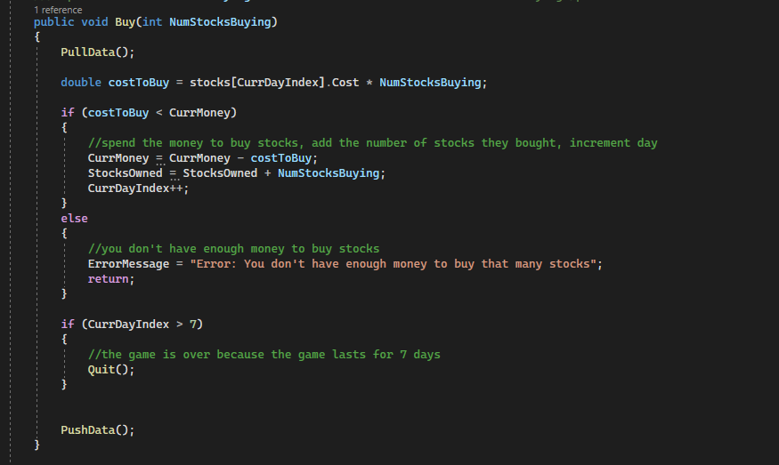

Stock Game Details

In this project, we created a way to simulate past stocks through a company that the user chooses. This system was created in .net using ajax to update the page rather than reloading the page. User is able to buy, sell or hold the stock. The user can also choose to quit at any time. When ever the user decides to buy, sell or hold, the game will simulate to the next day. After 7 days or the user selects quit. The website displays the total amount of money lost/earned through the time peroid.
In this code snippet. You can see how we created our buy system in the back end in .net. With this being ajax, we did not need to have a database to keep track of each day and could keep it within the scope of our code. All of our buy/sell/hold code is very similar to this one.